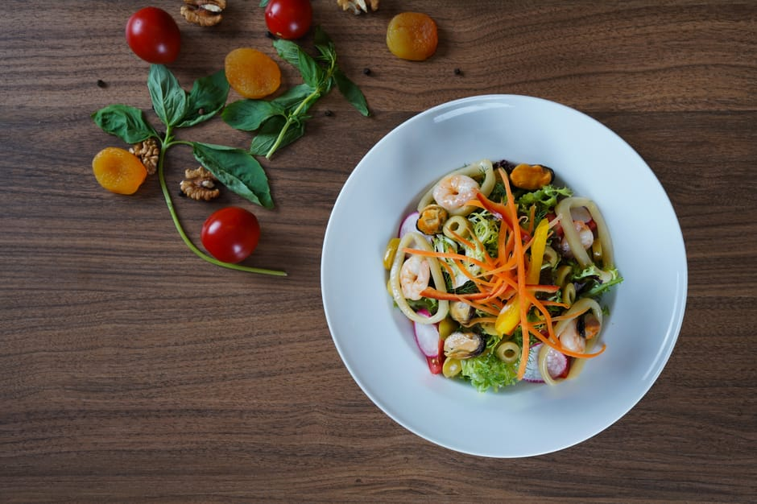
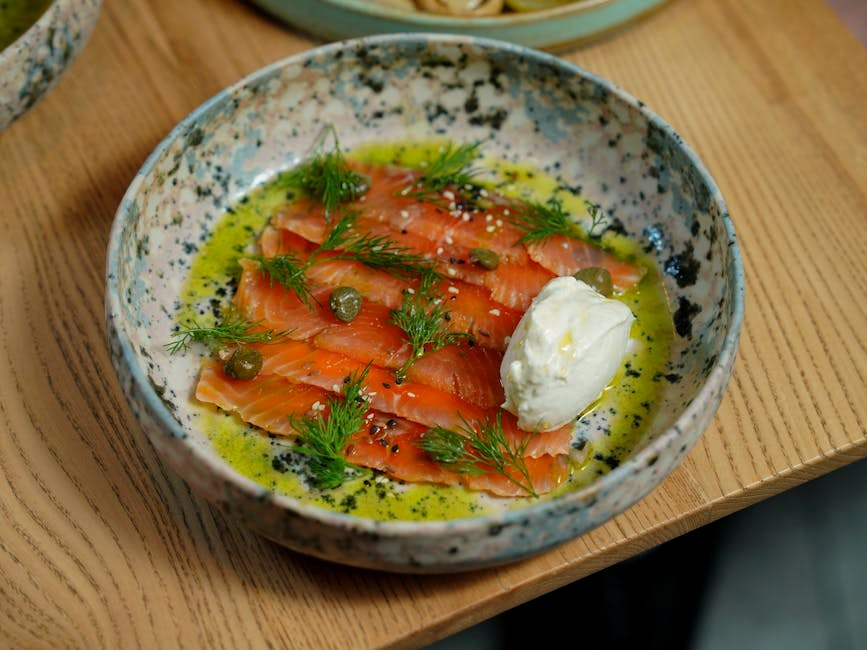
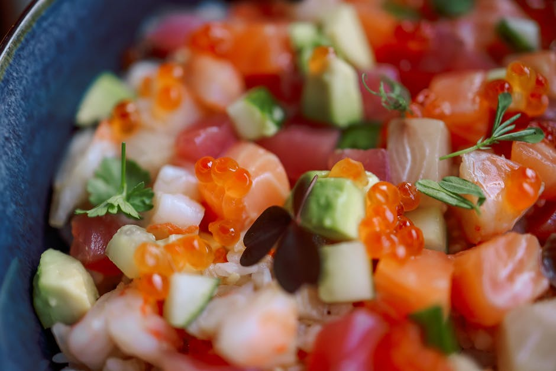

High-Protein, Low-Calorie Meals
When the goal is fat loss, protein-per-calorie is the number that matters. Each of these 31 meals packs roughly 70 g of protein into fewer than 500 kcal — maximum fullness per calorie, no rabbit-food energy about it.
31 recipes · every one lands ≈70 g of protein with under 20 g net carbs · tap any card for the full recipe, macros & dietary swaps
 Cocoa Greek Yogurt Protein Mousse
Cocoa Greek Yogurt Protein Mousse
 No-Bake Protein Cheesecake Cup
No-Bake Protein Cheesecake Cup
 Vanilla Almond Protein Shake with Skyr
Vanilla Almond Protein Shake with Skyr
 Protein Hot Chocolate
Protein Hot Chocolate
 Peanut Butter Protein Mousse
Peanut Butter Protein Mousse
 Chocolate Peanut Butter Protein Smoothie
Chocolate Peanut Butter Protein Smoothie
 Baked Cod with Lemon & Broccoli
Baked Cod with Lemon & Broccoli
 Whipped Cottage Cheese & Berry Protein Pot
Whipped Cottage Cheese & Berry Protein Pot
 Savory Whipped Cottage Cheese Bowl
Savory Whipped Cottage Cheese Bowl
 Tuna & Cottage Cheese Stuffed Peppers
Tuna & Cottage Cheese Stuffed Peppers
 Frozen Greek Yogurt Protein Bark
Frozen Greek Yogurt Protein Bark

Prawn & Egg Protein Salad Chocolate Protein Chia Pudding
Chocolate Protein Chia Pudding
 1-Minute Protein Mug Cake
1-Minute Protein Mug Cake
 Whipped Ricotta & Berry Protein Bowl
Whipped Ricotta & Berry Protein Bowl
 Sheet-Pan Shrimp Fajita Bowl
Sheet-Pan Shrimp Fajita Bowl
 Tuna & Egg Protein Box
Tuna & Egg Protein Box
 Protein French Toast
Protein French Toast

Cottage Cheese & Smoked Salmon Breakfast Bowl Greek Yogurt & Berry Protein Bowl
Greek Yogurt & Berry Protein Bowl
 Fluffy Protein Pancakes
Fluffy Protein Pancakes
 Mustard-Glazed Pork Tenderloin with Green Beans
Mustard-Glazed Pork Tenderloin with Green Beans
 Shrimp Scampi over Zucchini Noodles
Shrimp Scampi over Zucchini Noodles
 Sesame-Seared Tuna with Bok Choy
Sesame-Seared Tuna with Bok Choy

Shrimp & Avocado Cauliflower-Rice Bowl Cottage Cheese Protein Waffles
Cottage Cheese Protein Waffles
 Greek Yogurt Protein Parfait with Low-Carb Granola
Greek Yogurt Protein Parfait with Low-Carb Granola
 Teriyaki Chicken & Broccoli
Teriyaki Chicken & Broccoli
 Chicken Tikka Salad Bowl
Chicken Tikka Salad Bowl
 Parmesan-Crusted Baked Haddock
Parmesan-Crusted Baked Haddock
 Chicken & Cheese Protein Box
Chicken & Cheese Protein Box
More collections: High-Protein Breakfast Ideas · High-Protein Lunch Ideas · High-Protein Dinner Recipes · High-Protein Snacks · Vegetarian High-Protein Recipes · Quick High-Protein Meals (Under 30 Minutes) · High-Protein Meal Prep Recipes